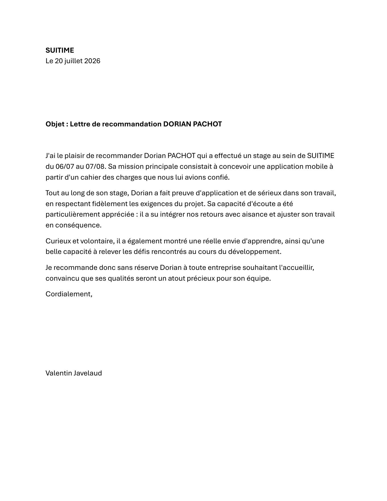
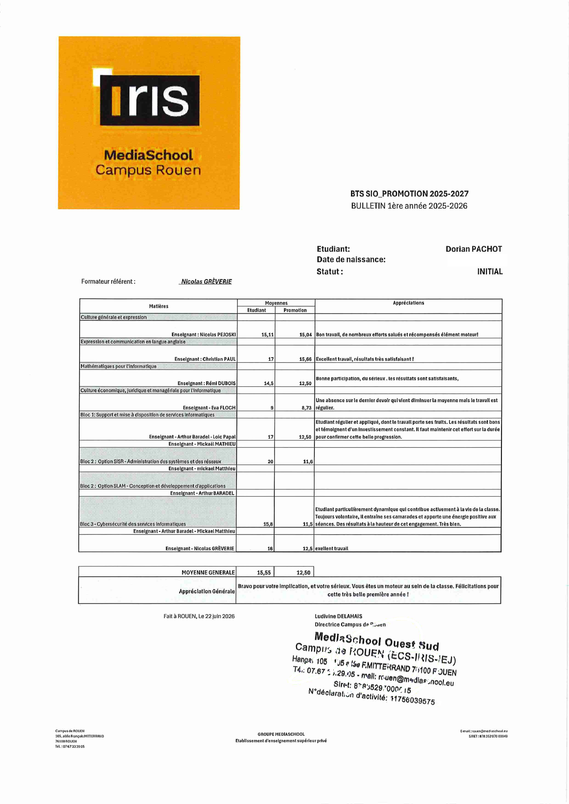
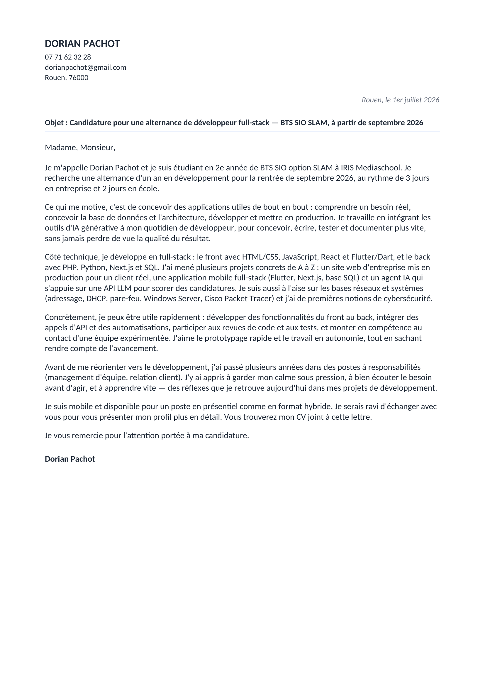

Documents
Les pièces qui accompagnent mon dossier de candidature : le bulletin de ma première année de BTS SIO, la lettre de recommandation de mon stage chez Suitime et ma lettre de motivation. Tout est consultable en ligne et téléchargeable en PDF.
Lettre de recommandation - Suitime
Stage de développement du 6 juillet au 7 août 2026 chez Suitime. La mission : concevoir une application mobile à partir d'un cahier des charges. C'est le projet qui a donné SYNCRO, aujourd'hui publiée sur l'App Store et Google Play. Lettre signée par Valentin Javelaud.

Bulletin de 1re année - BTS SIO
Bulletin de l'année 2025-2026 à IRIS MediaSchool, campus de Rouen. Moyenne générale de 15,55 pour une moyenne de promotion de 12,50.
-
15,55
Moyenne générale
(promotion : 12,50) -
20
Bloc 2 SISR
Administration systèmes et réseaux -
17
Bloc 1
Support et mise à disposition de services -
15,8
Bloc 3
Cybersécurité des services informatiques
« Bravo pour votre implication, et votre sérieux. Vous êtes un moteur au sein de la classe. Félicitations pour cette très belle première année ! »

Lettre de motivation
Lettre type pour ma recherche d'alternance en septembre 2026, que j'adapte à chaque entreprise.

Et aussi
Le CV complet est sur sa propre page : voir le CV.